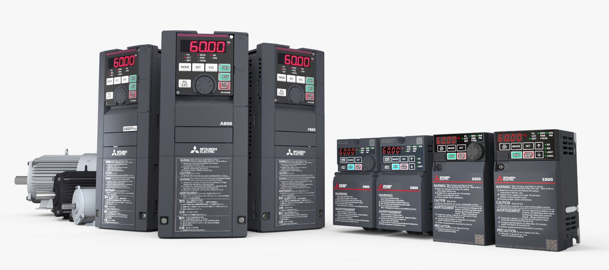
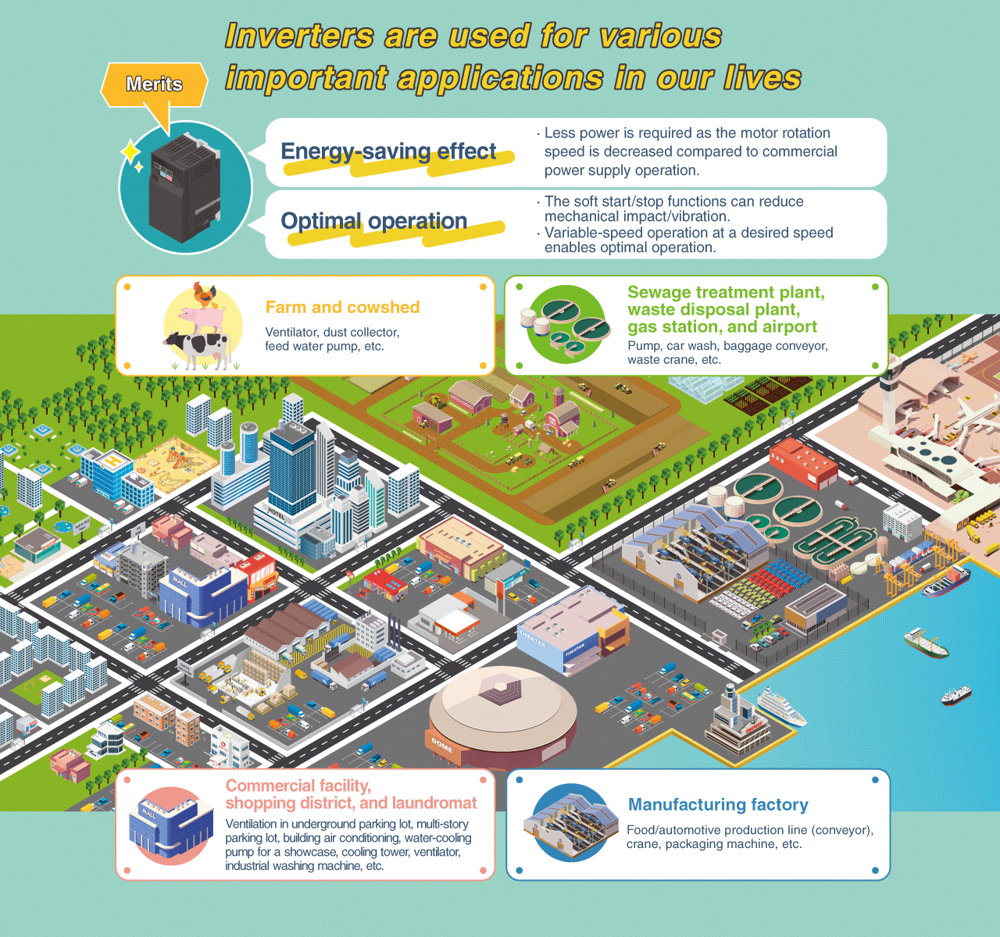
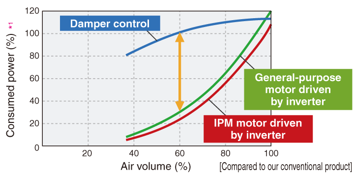

Inverters-FREQROL Product Features Main features



Main features

Energy saving
Compared to commercial power supply operation, significant energy savings can be gained by decreasing the rotation speed.
Inverter models that support the following motors are available.
- General-purpose motor with IE3 premium efficiency (SF-PR)
- IPM motor equivalent to IE4 super premium efficiency (MM-EFS)

*1: Rated motor output is 100%
Equipment maintenance
Equipment downtime will be reduced by using the predictive/preventive maintenance functions for inverters and peripheral devices, as well asusing the inverter’s diagnosis function.
- Life diagnosis function
The remaining life can be estimated for parts such as the main circuit capacitor, control circuit capacitor, and inrush current limit circuit by checking the deterioration. - Load characteristics fault detection function / output current detection function
When a mechanical fault occurs during conveyor/fan/pump operation, the inverter outputs a warning or shuts off the output to prevent system damage - Maintenance timer / start count monitor
Monitoring the operating hours contributes to preventive maintenance.
IoT
Real-time connection with the host IT system enables centralized or remote monitoring of operation, which further streamlines the production.
- CC-Link IE TSN
Real-time production data collection is enabled by high-speed, stable communication. - Multi-protocols supported
Multi-protocol inverters and communication options are available to support major global industrial Ethernet/field networks, achieving greater flexibility and facilitating maintenance and technical support.